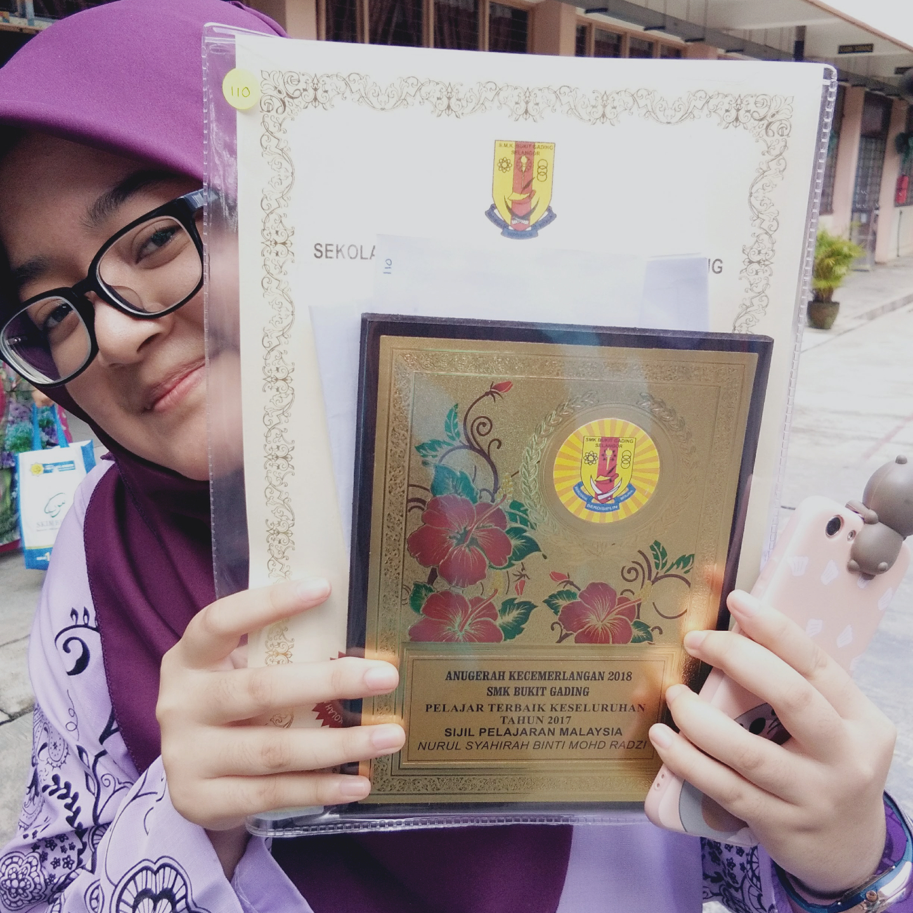

Educational Background
In my secondary school, I took literature field. I took Arts, Basic Economy, and Infomration and Communication Technology. During the day when SPM students had to take the result,
there were presentation certificates given to students who got more than 5A's in SPM. I was waiting patiently for the event to end so that we can take the result.
Unexpectedly, my name was called to be on the stage. And as I was still shocked and confused, my friend applaud for me. I walked to the stage with many confusion
and happy at the same time. It was at that moment, I knew I got 5A's and was in Top20 of SPM students in 2020.
After SPM, I chose Information Management course as one of eight choices in diploma, and unexpectedly was chosen to take the course. Right now, I am currently at my last semester.